Wireshark separates settings into Global and Personal Configuration folders. When you upgrade Wireshark, which files are overwritten and which are preserved — and why does this matter for your coloring rules and display filters?
A colleague shares their preferences file. What specific risk exists in blindly copying it to your own Personal Configuration folder?
Find Your Configuration Folders
Wireshark consists of two types of configuration settings: Global Configurations and Personal Configurations. Refer to Help | About Wireshark | Folders — as shown in Figure 88 — to identify the location of Global and Personal Configuration folders. Double-click on any folder link to open the corresponding folder.
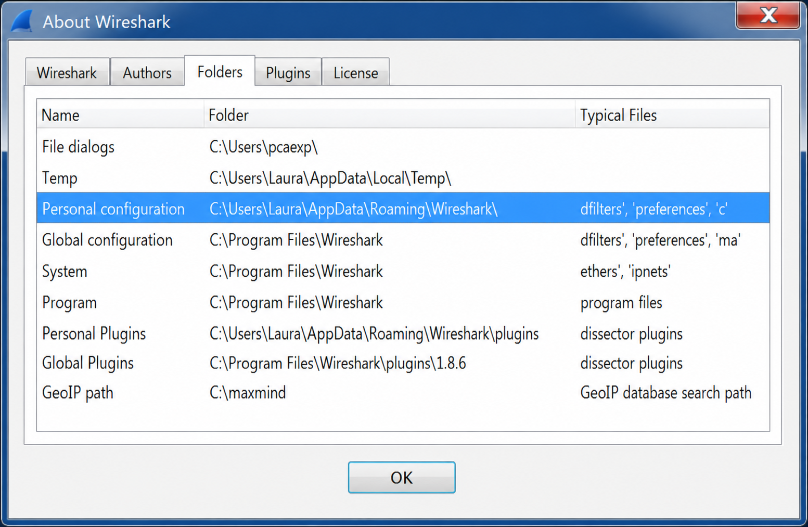
Set Global and Personal Configurations
Wireshark global settings include the following text files: cfilters (default capture filters), dfilters (default display filters), colorfilters (default coloring rules), manuf (default OUI list, global), services (default port list, global), and smi-modules (default MIB modules to load).
You can manually edit these global settings. For example, if you want to alter the transport name resolution of traffic on port 4308 because your custom-developed application uses that port, you can edit the services file entry from compx-lockview 4308/tcp CompX-LockView to ourapp 4308/tcp Our-App. If you want to change an OUI value from one manufacturer name to another, simply edit the manuf file.
Some of these files, such as cfilters, dfilters and colorfilters, can become personal settings. When you use Wireshark to add or edit capture filters, display filters or your coloring rules, Wireshark copies the original file from the Global Configuration folder and saves the new version (with your edits) in your Personal Configuration folder. When you make changes to your global preferences (such as adding Packet List pane columns, changing protocol settings, or altering name resolution settings), a new preferences file is saved in your Personal Configuration folder.
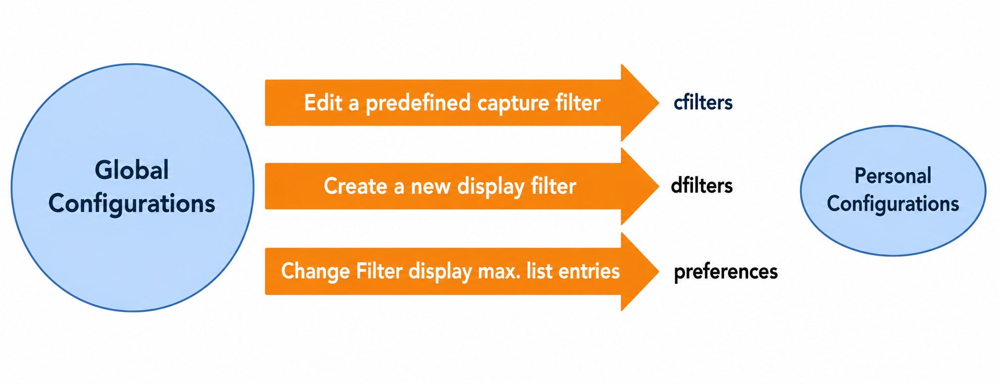
You can share these files with others by simply sending them the file. The new settings will be available after the receiver places the file(s) in their Personal Configuration folder and restarts Wireshark. Be careful of sharing Personal Configuration files such as the preferences file that contain directory structure information and the recent file that contains the most recent directory you visited. The directory information may not match the system to which you are copying this configuration information.
You can create a profile that uses its own configuration files. For example, if you work on WLANs part of the time, you might create a WLAN profile that includes filters, coloring and columns that assist you in analyzing WLAN traffic. For more information on creating and using profiles, refer to Chapter 11: Customize Wireshark Profiles.
When you change global preferences while working in a profile, a new preferences file is saved in your profile folder. When you return to the default profile, you are using preferences contained in your Personal Configuration folder, not a profile subdirectory. For details on each of the global preferences settings, refer to www.wireshark.org/docs/wsug_html/#ChCustGUIPrefPage. In this Study Guide we focus on key preference settings only.
Some of the most common global preferences to change include: “Open Recent” max list entries (increase to 30), Pane layout (put the Packet Details and Packet Bytes panes side-by-side), Capture | Update list of packets in real time (disable to reduce overhead), Name Resolution settings (enable network name resolution with caution), Filter Expressions (add key display filter buttons to the display filter area), and various protocol settings (disable IP checksum validation for task offloading).
When you update Wireshark, you are prompted to uninstall the previous version. During the uninstall process you can choose the components that you want to save as shown in Figure 90 (uninstall process on a Windows host).
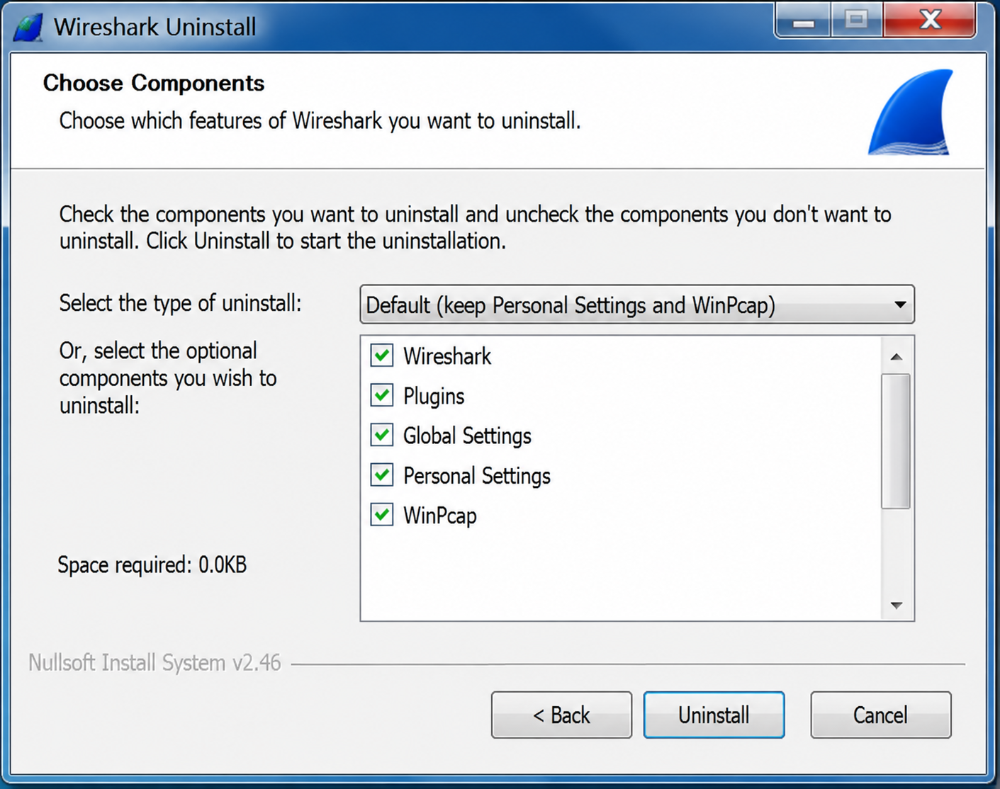
By default, Wireshark maintains your personal settings during the update process, but overrides the global settings, such as the default cfilters, dfilters, colorfilters, manuf and services files. After installing Wireshark, consider making a copy of the original preferences file in case you need to restore it at some time in the future without going through a reinstallation.
preferences file is risky — it embeds machine-specific paths. Profiles each get their own config subfolder.Why is increasing the “Open Recent” and “Filter display” max list entries to 30 described as saving “a LOT of time” in practice? What workflow friction does it eliminate?
What is the difference between adding a predefined column and creating a custom column, and when would you need the custom approach?
Customize Your User Interface Settings
Select Edit | Preferences or click on the Preferences icon on the Main Toolbar. The User Interface Settings area contains five sections: the main User Interface section, Layout, Columns, Fonts and Colors as shown in Figure 91.
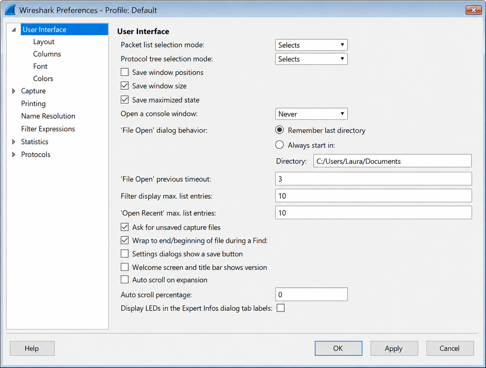
“File Open” Dialog Behavior
When you select File | Open, Wireshark looks in the directory specified by this setting or in the last directory from which a trace file was opened. Consider creating a \mytraces directory for all your trace files so you can set Wireshark to always look in this same directory.
Maximum List Entries
There are two “maximum list entries” settings available. The first, “Filter display”, controls the number of recently-created display filters that appear when you click the drop-down arrow next to the display filter field. The second, “Open Recent”, controls the number of recently opened trace files that Wireshark displays when you select File | Open Recent.
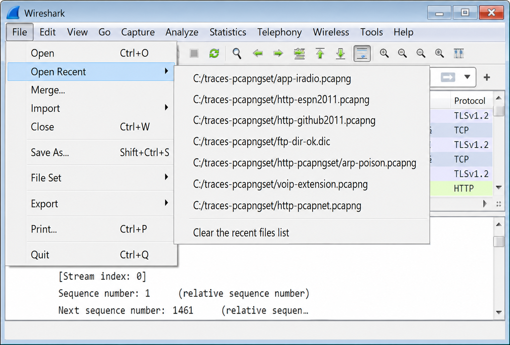
Pane Configurations
The default Wireshark pane configuration shows three stacked panes including the Packet List pane, the Packet Details pane and the Packet Bytes pane. Use View | <pane> to toggle on or off the various panes. Alter the pane layouts by selecting Edit | Preferences | User Interface | Layout.
Columns
The default columns in the Wireshark Packet List pane are: No. (packet number, never changes), Time (based on View | Time Display Format), Source (highest layer source address), Destination (highest layer destination address), Protocol (highest layer protocol), Length (frame length), and Info (protocol-specific details).
Wireshark contains numerous predefined columns that can be added easily to the Packet List pane. Select Edit | Preferences | Columns and select Add to choose one of the predefined columns. In addition, you can right click on a field in the Packet Details pane and select Apply As Column. The new column will be added to the right side of the existing columns. Right click on a column heading in the Packet List pane to remove, rename, or align columns. Columns can be reordered by dragging them up or down in the Preferences window or by dragging directly in the Packet List pane.
Several predefined columns include: 802.1Q VLAN id, Absolute date and time, Cisco Dst PortIdx, Cumulative Bytes, Delta time (conversation), Dest addr (unresolved), Destination port, Expert Info Security, Fibre Channel OXID, Frame Relay DLCI, Frequency/Channel, IEEE 802.11 RSSI, IEEE 802.11 TX rate, IP DSCP Value, Net Dest addr (resolved), Packet length (bytes).
There may be times when you do not have a packet that has the desired column’s field so you can’t use Apply As Column, or Wireshark may not have a predefined column you can simply select. In this case, you can still create a custom column. For example, if you want to create a column that displays the TCP window size field value, select Edit | Preferences | User Interface | Columns | Add and choose the field type Custom. Enter the name of the field that you want to add a column for.
In Figure 93, we have set up a new column for the Calculated TCP Window Size (tcp.window_size) field value and moved it to appear after the Time column. Packet 374 has a very low Window Size value — low enough to force the sender to stop sending data until a Window Update has been received. The Time column indicates this caused a 2.75+ second delay. For more information on issues related to small window sizes, refer to Chapter 20: Analyze Transmission Control Protocol (TCP) Traffic.
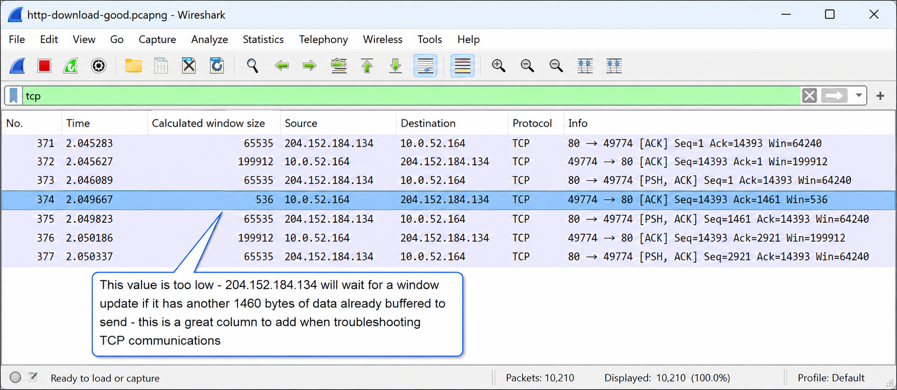
tcp.window_size). Columns can be reordered by drag in both Preferences and the Packet List pane.What three goals does pcap-ng address compared to the older pcap format, and why would packet comments inside a pcap-ng file be useful for a forensics workflow?
Promiscuous mode and monitor mode are both ways to capture more traffic. What is the functional difference, and on which type of network does each apply?
Define Your Capture Preferences
The capture preferences are used to select a default interface for capture and apply some configuration settings to that interface. Figure 94 shows the capture Preferences window with the new trace file format, pcap-ng, enabled.
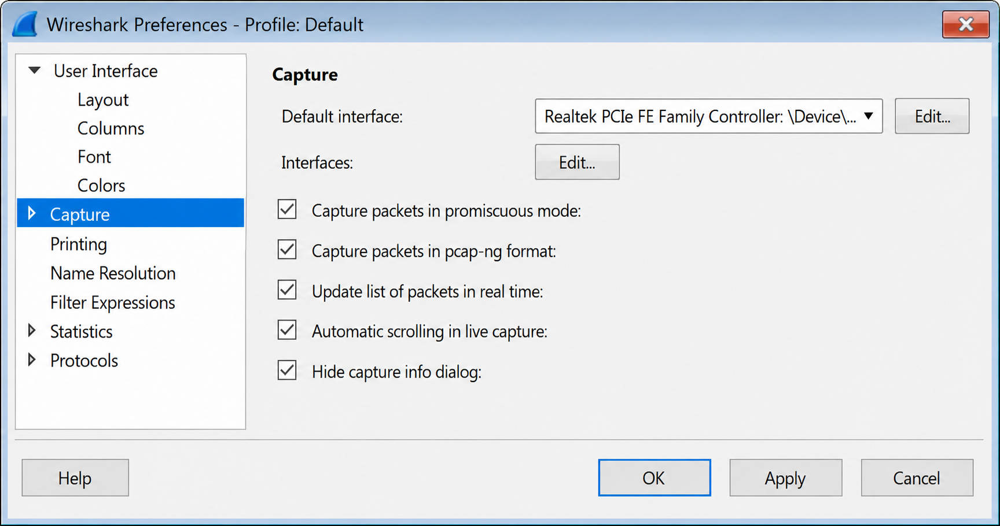
Select a Default Interface for Faster Capture Launch
Selecting the default interface speeds up the time required to begin packet capture. If this is set for the interface you want to use, just click the Start Capture button on the Main Toolbar. If an interface will never be used for packet capture, select Edit | Preferences | Capture and select an interface before clicking Edit, as shown in Figure 95.
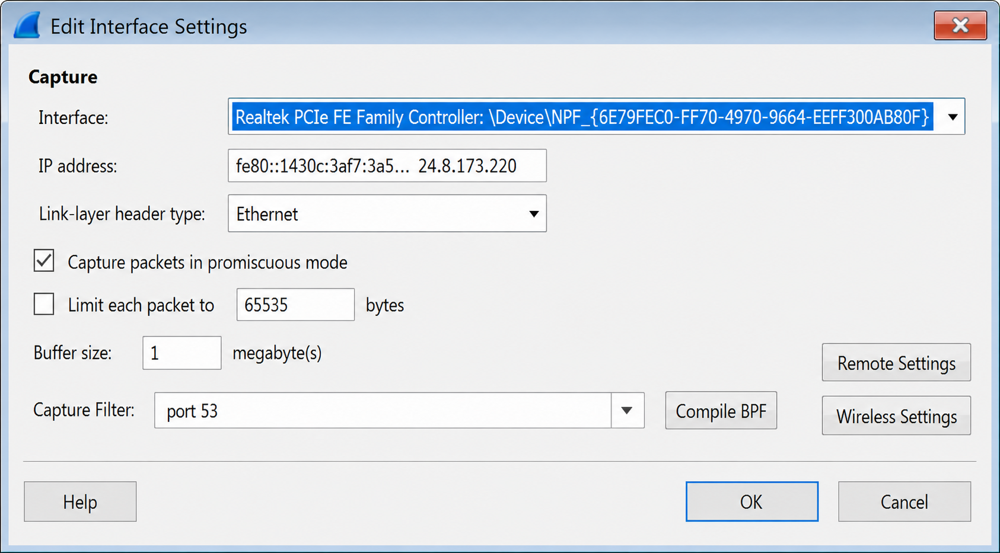
Enable Promiscuous Mode to Analyze Other Hosts’ Traffic
Promiscuous mode enables an interface to capture packets that are not addressed to the interface’s MAC address. In essence, this is the mode that allows analysts to listen in on traffic destined to other hosts on the wired network (refer to Compare Monitor Mode vs. Promiscuous Mode for information about capturing WLAN traffic). Disabling promiscuous mode will limit the capture to packets to or from the local interface only.
The Future Trace File Format Is Here: pcap-ng
As of Wireshark 1.8, pcap-ng (the ng stands for next generation) format is the default trace file format (if pcap-ng is enabled for your Wireshark Capture preferences as shown in Figure 96). Files saved in pcap-ng format end with .pcapng.
Pcap-ng addresses three goals for capture file formats: Extensibility, Portability, and Merge/append data. With these three goals in mind and future development on pcap-ng, meta data may be included with trace files to enhance interpretation and improve efficiency of network analysis processes. For more information about pcap-ng format, visit www.winpcap.org/ntar/draft/PCAP-DumpFileFormat.html.
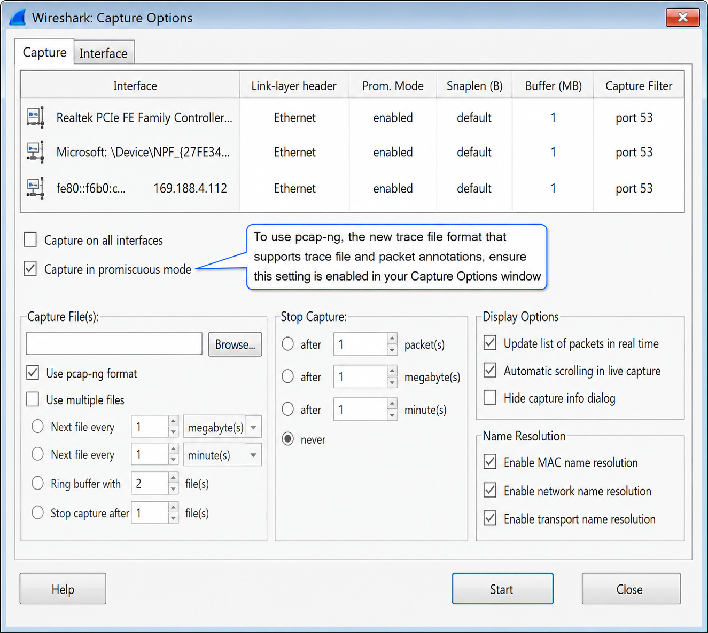
.pcapng extension.You can begin taking advantage of pcap-ng capabilities in Wireshark 1.8. Right click a packet in the packet list pane and select Edit or Add Packet Comment. This feature saves annotations inside a pcap-ng trace file. For more information on annotation, see Chapter 12: Annotate, Save, Export and Print Packets.
See the Traffic in Real Time
Enable Update list of packets in real time to view the packets as they are captured. This feature allows you to start analyzing right away — while you are capturing. This feature can negatively affect Wireshark performance on a busy network. Consider disabling this feature if the Status Bar indicates Wireshark has dropped packets or you suspect packets have been dropped. For more recommendations for dealing with dropped packets, refer to Optimize Wireshark to Avoid Dropping Packets.
Automatically Scroll During Capture
On a very busy network, you will probably not be able to keep up with the packets as they scroll by quickly on the screen. This feature can be useful if you have applied a capture filter that limits the number of packets captured, or a display filter that limits the number of packets displayed. This feature can also negatively affect Wireshark performance on a busy network. Consider disabling automatic scrolling if the Status Bar indicates Wireshark has dropped packets or you suspect packets have been dropped.
.pcapng extension. Supports in-file packet comments. Promiscuous mode = capture all visible wired frames, not just your MAC. Hidden interfaces disappear from the list — check Capture Preferences first. Disable “Update list in real time” and auto-scroll on busy networks to prevent dropped packets.Enabling network name resolution can “slow Wireshark to a crawl.” What causes this performance hit, and what is the safest way to get human-readable IP addresses without triggering it?
What are the three layers of name resolution Wireshark provides (MAC, IP, port), and which file drives each one?
Automatically Resolve IP and MAC Names
Wireshark offers many options for name resolution. The most commonly used options are MAC name resolution, transport name resolution and network name resolution. The name resolution preferences can severely impact performance in certain situations. Figure 97 shows the name resolution Preferences window.
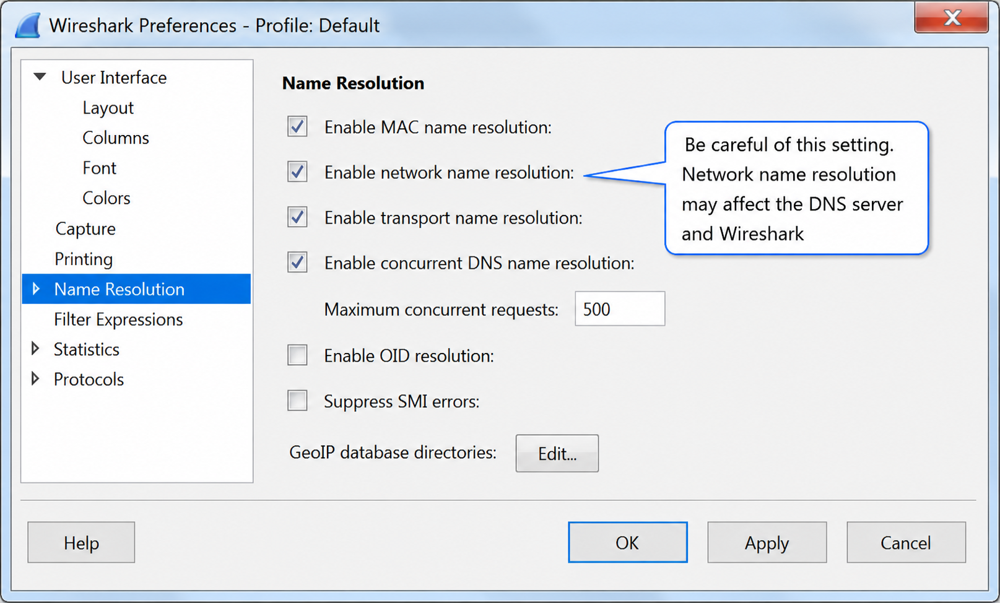
Resolve Hardware Addresses (MAC Name Resolution)
MAC name resolution resolves the first 3 bytes of the MAC address to the OUI value contained in the manuf file in the Wireshark Global Configuration directory. Wireshark’s manuf file began as a subset of Michael Patton’s Ethernet Codes Master Page and includes entries from IEEE’s OUI list. The manuf file consists of the three byte OUI value followed by the manufacturer short name and manufacturer long name (commented out) if available:
00:E0:96 Shimadzu # SHIMADZU CORPORATION 00:E0:97 CarrierAcc # CARRIER ACCESS CORPORATION 00:E0:98 Trend 00:E0:99 Samson # SAMSON AG 00:E0:9A Positron # Positron Inc. 00:E0:9B EngageNetw # ENGAGE NETWORKS, INC.
You can edit the manuf file — be certain to use a generic text editor that won’t put extraneous characters in the file. You can also create an ethers file to enable Wireshark to resolve MAC addresses to names. The ethers file format is the same as the hosts file format. Place this file in your Wireshark Global Configuration or in your Personal Configuration directory. As long as Enable MAC name resolution is set, Wireshark will look for the ethers file to resolve MAC addresses.
In Figure 98, Wireshark has resolved two MAC addresses based on the information contained in the ethers file (also shown in the figure). ARP packets list the Ethernet address in the Packet List pane Source and Destination columns. TCP and UDP packets show the resolved addresses inside the Packet Details pane. Using an ethers file does not have the same negative impact on performance that you may experience when enabling network name resolution because it is a simple file lookup process. Remember that MAC headers are stripped off and re-applied as packets cross routers on a network — if you focus on the MAC header addresses, you are only seeing addresses of local devices.
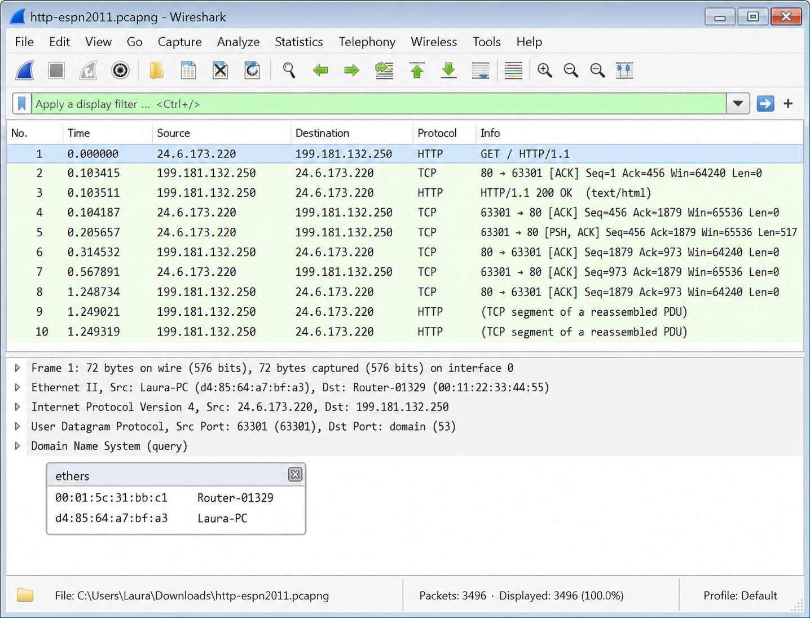
Resolve IP Addresses (Network Name Resolution)
Network name resolution uses a host file lookup process or inverse DNS queries (also referred to as Pointer or PTR queries) to resolve IP addresses to host names. If network name resolution is enabled you can also enable concurrent DNS resolution and define the maximum concurrent requests for faster name resolution processing. Figure 97 shows a setting of 500 will be used if network name resolution is enabled.
You can create a Wireshark hosts file and place it in your Personal Configurations directory to speed up Wireshark’s network name resolution process. When you enable network name resolution, Wireshark looks for this hosts file before generating DNS PTR queries to a DNS server. The Wireshark hosts file syntax is ipaddress hostname as shown below:
10.1.0.1 rtr01 10.1.0.99 server04 10.1.0.4 Fred 10.1.0.6 Michaela
You will need to restart Wireshark before it will recognize the new hosts file. You can manually resolve the address of a host by right clicking on an address in the Packet Detail pane. For example, if you expand the IP header of a packet and right click on the destination IP address, Wireshark will resolve just that one IP address. This great feature was added by Stig Bjørlykke.
Plot IP Addresses on a World Map with GeoIP
Using the MaxMind databases, you can see IP addresses plotted on a world map. Follow these steps to enable and use GeoIP:
- Step 1: Download GeoLiteCity.dat.gz, GeoIP.dat.gz, GeoIPASNum.dat.gz, GeoLiteCityv6.dat.gz, and GeoIPv6.dat.gz from geolite.maxmind.com/download/geoip/database/.
- Step 2: Create a maxmind directory on your local drive and extract all the MaxMind files in that directory.
- Step 3: In Wireshark, select Edit | Preferences | Name Resolution and click the Edit button in the GeoIP database directories area. Enter the path to your maxmind directory. Optionally select Edit | Preferences | Protocols | IPv4 and check Enable GeoIP lookups. As of Wireshark 1.8, you can also enable GeoIP resolution for IPv6 via Edit | Preferences | Protocols | IPv6.
- Step 4: Open http-espn2011.pcapng. Select Statistics | Endpoints and click on the IPv4 tab. Click the Map button. An OpenStreetMap view of the world will appear with your IP addresses mapped with red flags. Click on a flag to learn more about that host.
Resolve Port Numbers (Transport Name Resolution)
The services file resides in the Global Configurations directory and contains a list of the port numbers and application/protocol names. The services file is a copy of the IANA port number file. You can edit this file using a text editor (as long as the editor does not put extraneous characters in the file). The original IANA file can be found at www.iana.org/assignments/portnumbers.
Resolve SNMP Information
Your copy of Wireshark must support libSMI to use MIBs and enable the SNMP dissector to resolve the object IDs (OIDs). For more information on Wireshark’s handling of SNMP MIBs, refer to wiki.wireshark.org/SNMP. In the Name Resolution setting, enable OID resolution. The SNMP MIB (Management Information Base) files are used to resolve ASN1 (Abstract Syntax Notation 1) numbers to object names in SNMP communications. The MIB modules are contained in the \snmp\mibs directory in the Wireshark Program File directory. The smi-modules file lists the default MIB modules to load when Wireshark is launched.
There are over 300 MIBs in Wireshark’s \snmp\mibs folder. The default set of MIBs that load when you launch Wireshark includes IP-MIB, IF-MIB, TCP-MIB, UDP-MIB, SNMPv2-MIB, RFC1213-MIB, and several SNMP framework MIBs. Additional SNMP MIBs can be found at www.mibdepot.com or www.oidview.com/mibs/detail.html. If Wireshark can’t resolve an SNMP MIB object, or OID (Object Identifier), it shows a partially resolved name such as enterprises.9.9.41.2.0.1. In order to enable Wireshark to decode additional MIB information, (1) a MIB file must be created in the proper format and (2) the MIB must be placed in the \snmp\mibs folder. For details on formatting, naming and adding MIBs, refer to wiki.wireshark.org/SNMP. If you are using secure SNMP communications available with SNMPv3, set the username, authentication model, password, privacy protocol, and privacy password in Edit | Preferences | SNMP.
manuf OUI + optional ethers file, fast local lookup), IP/Network (Wireshark hosts file first then DNS PTR — can devastate performance), Port/Transport (services IANA copy, local). GeoIP: download MaxMind .dat files → point Wireshark via Preferences → Name Resolution. Hosts file syntax: ipaddress hostname; requires restart. Over 300 MIBs in \snmp\mibs; need “with SMI” in About to resolve OIDs.Why does checksum offloading cause false Bad Checksum alerts in Wireshark, and what is the recommended fix?
When would you toggle “Allow subdissector to reassemble TCP streams” ON vs. OFF, and what do you see differently in the Packet List pane each way?
Define ARP, TCP, HTTP/HTTPS and Other Protocol Settings
Many of the protocols and applications interpreted by Wireshark have dissection options that can be changed. Those options could be as simple as changing the default port that an application uses or as complex as defining how dissectors should handle specific types of traffic.
Configure Filter Expressions
This feature was added in Wireshark 1.8 and is fantastic! Simply select Add, enter a label and display filter as shown in Figure 99. (You can also create a display filter and click the Save button on the display filter area.) Filter Expression buttons are shown in the display filter area.
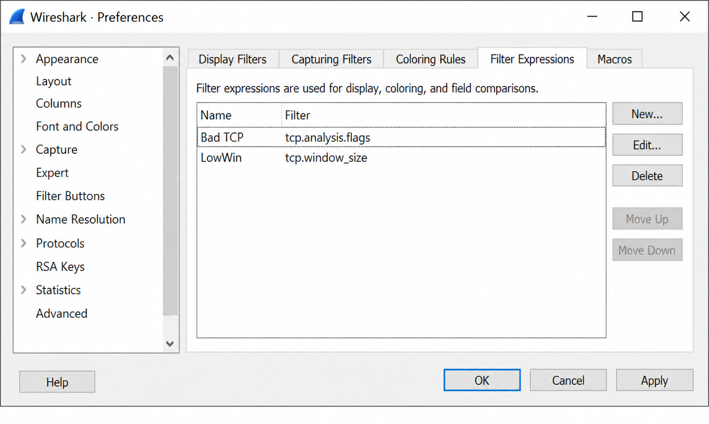
You don’t need to use the Preferences window to add Filter Expressions. Try typing in a display filter and clicking the Save button. You will be prompted to name your Filter Expression as shown below. At the current time you will need to return to the Preferences | Filter Expressions area to rename or edit your Filter Expression.
Configure Statistics Settings
There are only two statistics settings — one that defines the tap update interval and another that defines the number of visible channels in the RTP player. Figure 100 shows the statistics preferences window. The settings you define only affect the current working profile. If you are in the Default profile and you alter the maximum visible channels in the RTP player, you will not see the new setting when you switch to another profile. Preference settings are maintained in the preferences file, for example:
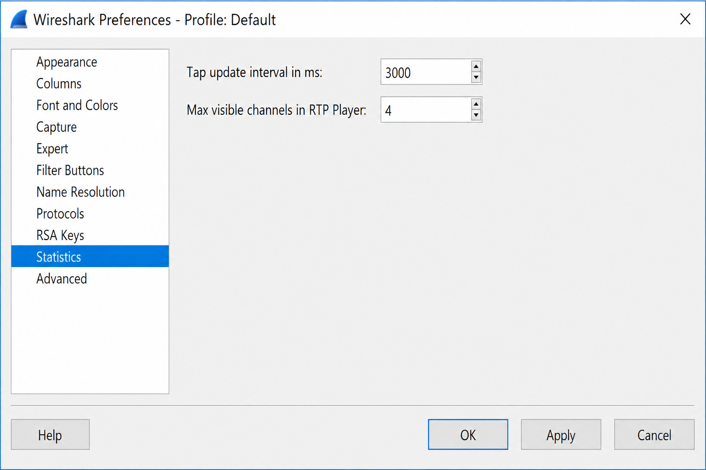
####### Taps/Statistics ######## # Tap update interval in ms. # An integer value greater between 100 and 10000. #taps.update_interval: 3000 # Maximum visible channels in RTP Player window. # An integer value greater than 0. #taps.rtp_player_max_visible: 4
Detect Duplicate IP Addresses and ARP Storms
Figure 101 shows the protocol preferences for the ARP/RARP dissector. Notice that you have the ability to enable detection of ARP storms and detect duplicate IP addresses. Duplicate IP address detection is on by default. To enable ARP storm detection you must define the number of ARP packets to detect during a specific detection period. When this is enabled using the default settings shown in Figure 101, Wireshark looks for 30 ARP packets occurring within 100ms before triggering an event.
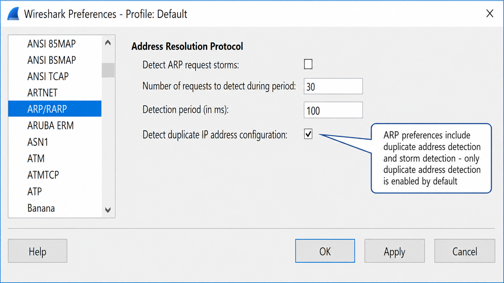
Define How Wireshark Handles TCP Traffic
One of the most commonly altered protocol preferences is the TCP dissector configuration, as shown in Figure 102. You can alter many key TCP dissector behaviors, such as: TCP checksum validation, allow subdissectors to reassemble TCP streams, analyze TCP sequence numbers (very helpful when troubleshooting), use relative sequence numbers (also very helpful when troubleshooting), track the number of unacknowledged bytes (bytes in flight), calculate TCP conversation timestamps, try heuristic subdissectors first, and ignore TCP timestamps in summary (Wireshark 1.8 and later).
Refer to Chapter 20: Analyze Transmission Control Protocol (TCP) Traffic for more details on TCP relative sequence numbers, tracking TCP conversation timestamps and typical TCP communication problems as well as the TCP preference settings listed previously.
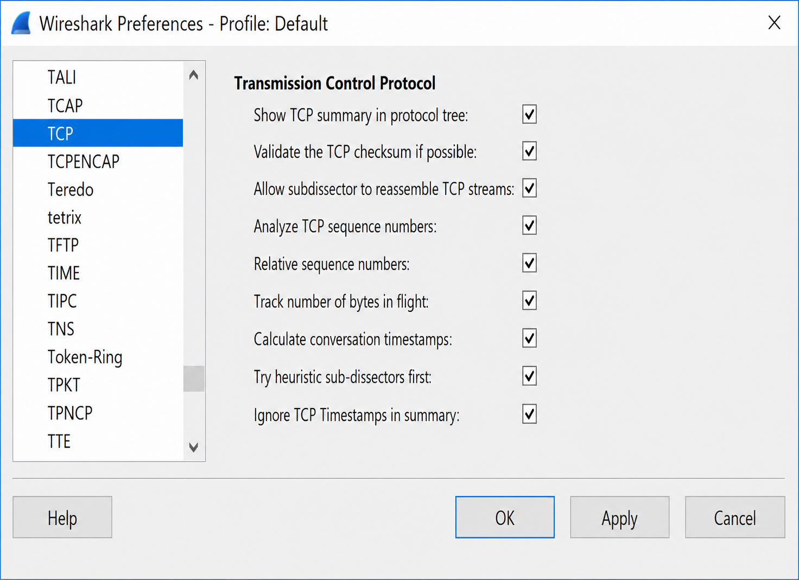
One setting that you may find yourself turning on and off at times is the Allow subdissector to reassemble TCP streams setting. For example, for the clearest view of HTTP traffic in the Packet List pane, disable this setting to see the HTTP GET requests and the HTTP response codes. When you are working with HTTPS traffic, however, enable this setting to see and filter on all four SSL/TLS handshake packets. For more information on using this setting, refer to Allow Subdissector to Reassemble TCP Streams.
Set Additional Ports for HTTP and HTTPS Dissection
In the HTTP protocol preferences, you can add other ports that you might use for HTTP or HTTPS (SSL/TLS) traffic. For example, if you are running your HTTP server on port 3880, simply add this port number to the TCP ports list in the HTTP preferences area. For more details on working with HTTP/HTTPS traffic and settings, refer to Chapter 23: Analyze Hypertext Transfer Protocol (HTTP) Traffic.
Enhance VoIP Analysis with RTP Settings
In the RTP protocol preferences, you can configure the Wireshark RTP (Realtime Transport Protocol) dissector to try to decode RTP outside of conversations. This means that if you did not capture the call setup process (such as Session Initiation Protocol, SIP), Wireshark still examines the traffic to identify and decode RTP streams. This is an excellent setting to enable if Wireshark often cannot decode your RTP traffic. For more details on working with VoIP traffic, refer to Chapter 27: Introduction to Voice over IP (VoIP) Analysis.
Configure Wireshark to Decrypt SSL Traffic
In the SSL protocol preferences, you can define how SSL reassembly should work and enter one or more RSA keys to decrypt the SSL traffic detected by Wireshark. Wireshark can only decrypt SSL traffic if it is configured properly to reference an RSA key. For more information on decrypting SSL traffic, refer to Analyze HTTPS Communications.
Configure Protocol Settings with Right-Click
If you want to quickly change protocol settings while examining a packet, right click on a protocol section in the Packet Details pane (e.g., Ethernet, IP, TCP and HTTP). Select Protocol Preferences and set the value or toggle the setting on or off. In Figure 103 we right clicked on the TCP summary line and selected Protocol Preferences. Preferences set this way are permanent and will be available again when you reload another trace file or restart Wireshark. This is the fastest way to change protocol preferences for Wireshark.
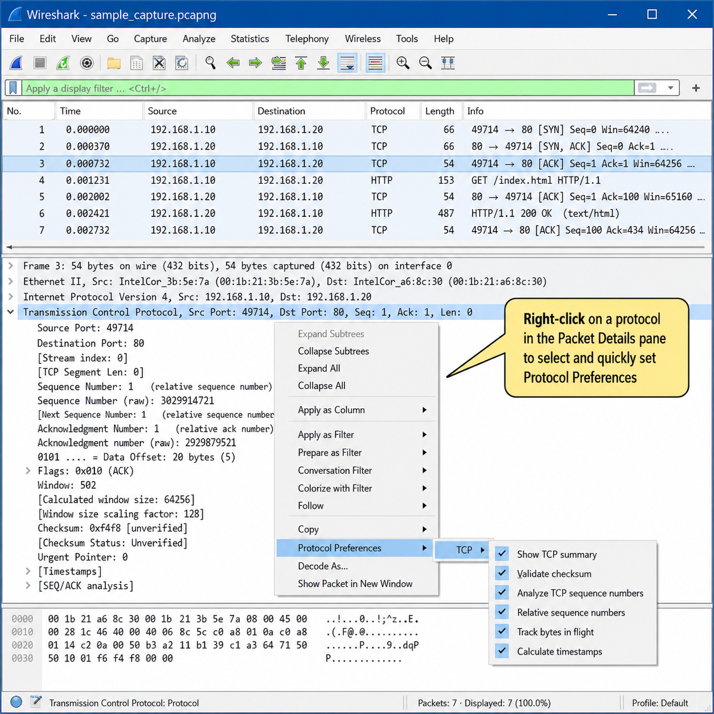
Case Studies
At one customer location they had configured a number of internal web servers to offer corporate information to all the employees, act as test servers, provide a site for uploading and downloading support files between departments, etc. The IT team had configured these servers with HTTP daemons running on unusual port numbers — from port number 259 to port 266.
When the IT team is called in to troubleshoot communications to any one of these servers, Wireshark won’t dissect the traffic as HTTP traffic. To fix this problem, the team created a personal preference setting for HTTP traffic that included the additional port numbers they used for their HTTP traffic as shown in the next figure. Once Wireshark was configured with these additional ports, the IT team could easily dissect all the traffic to these servers as HTTP traffic.
Because this IT team moved to many different branch offices and even partner companies, they decided to save this configuration in a profile so they could easily revert back to the default settings in case other traffic used those ports.
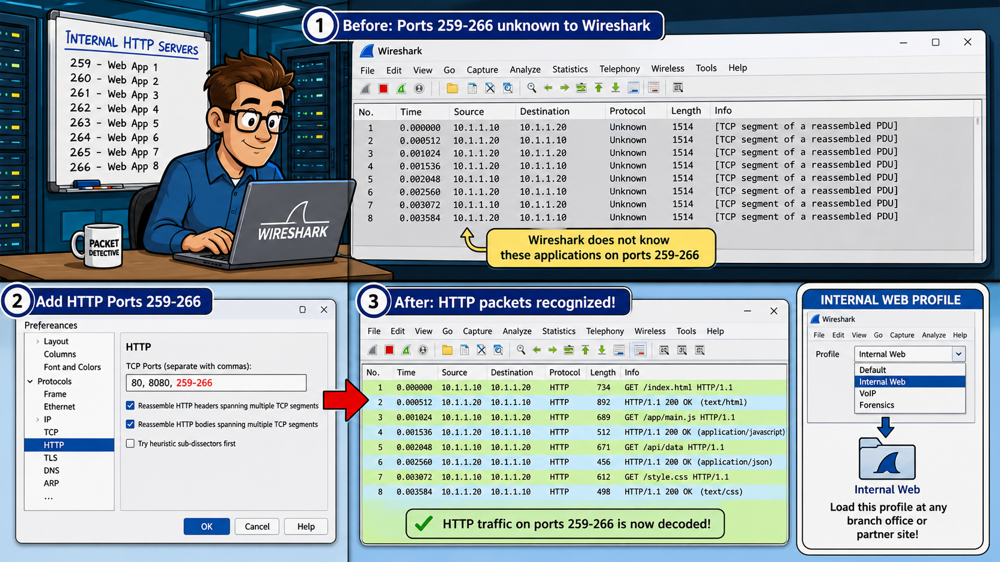
Wireshark can and should be customized for more efficient troubleshooting and security analysis. You can customize the Wireshark interface, capture preferences, capture/display filters, packet colorization, name resolution processes, dissector behavior and more. Various default settings are maintained in the Global Configurations directory while personal settings are maintained in the Personal Configurations folder. Additional configuration information is saved in profile directories as well. Locate your Global and Personal Configurations folders through Help | About Wireshark | Folders.